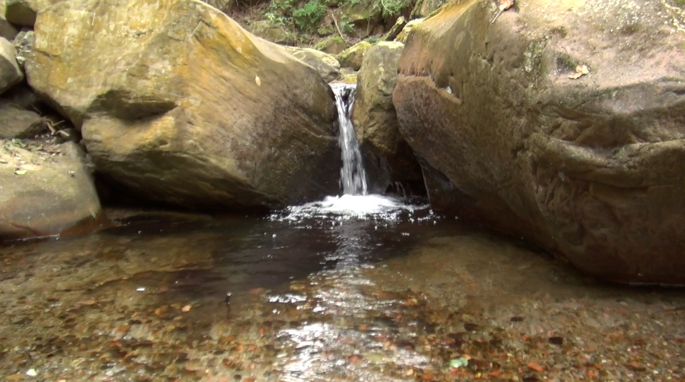

TURISMO EN LA CRUZ
Tiene lugares de atracción como el mirador (la cruz) desde allí se puede ver toda la ciudad de Yacuiba ya que está en constante crecimiento, más arriba el cerro pila, y el más alto cerro picacho mejor es ir en compañía en grupo de 5 o más personas, llevarse soga, agua, primeros auxilios, comida (el viaje tiene una duración de 7 horas a paso lento), machete, bolsas de plástico grande (si llueve), cámara filmadora porque la subida es de pura piedra lo que hace que aumente la adrenalina y la emoción. Si no conocen el lugar es mejor también hacer unas pequeñas huellas en los árboles o guiarse por piedras en el camino Si van niños, es mejor que un adulto este con ellos, hay lugares resbalosos, lo que se recomienda también es ir con zapatos
un vistazo a la laguna Santa Marta
La laguna SANTA MARTA es un lugar turístico cerca de la ciudad de Yacuiba pasando el Regimiento Aroma 3 de Caballeria “Campo Pajoso”, a lo lejos se puede ver la imponente laguna SANTA MARTA, a las orillas del rio se puede sentir el fresco viento que hace agradable y se lo merece quienes hayan llegado a la laguna, también favorece a quien lo navegue ya que el viento ayuda a que la lancha se mueva mas rápidamente y hace que avance más rápido, la laguna santa Martha tiene para pasear en lanchas, Despues de pasear o nadar en la laguna, también se puede distraer mirando el panorama de la laguna desde las orillas de la laguna, se puede servir algunos platos que sirven en el lugar y con sombre en las cabañas, cuenta con lugares de pesca mayormente se pescan anguilas porque este es su lugar preferido para habitar, son como las vivoras, son pequeñas pero no son peligrosas, no pican pero si chupan, se alimenta de pedazos que encuentran en el lago, también son llamadas con el nombre de “carroñeras”,

Aguas Termales
El director de Promoción Económica del Gobierno Municipal de Yacuiba, Wilson Villegas, anunció que para septiembre se tiene previsto realizar la 1º Feria turística en la comunidad Timboy Tiguazu, con el objetivo de promocionar las ‘Aguas termales’ ubicadas en esa zona. Para el cometido se está coordinando con la OTB de la comunidad. Se quiere aglutinar a una importante cantidad de turistas locales, nacionales e internacionales. “El Gobierno municipal tiene claramente establecido la promoción de varios lugares turísticos en nuestra región, estos atractivos que nos ofrece la naturaleza son potenciales generadores de recursos económicos para los comunarios. Como dirección de promoción económica buscamos poner en alto el nombre del municipio de Yacuiba para que sea un referente a nivel nacional”, aseveró Villegas. Dijo también que se tiene previsto un stracking, o conocido también como recorrido turístico. Este comprende la visita de la cumbre del Aguaragüe y otros lugares dentro de la comunidad de Sanandita. Para el proyecto ya se cuenta con el estudio terminado y se lo lanzará oficialmente en los próximos días.
